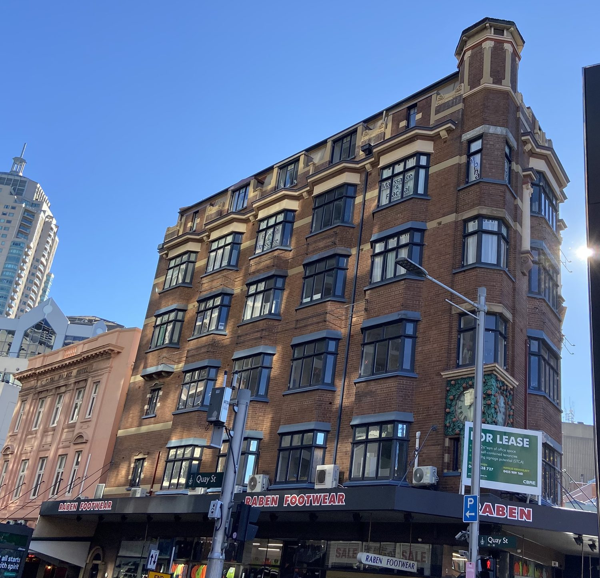
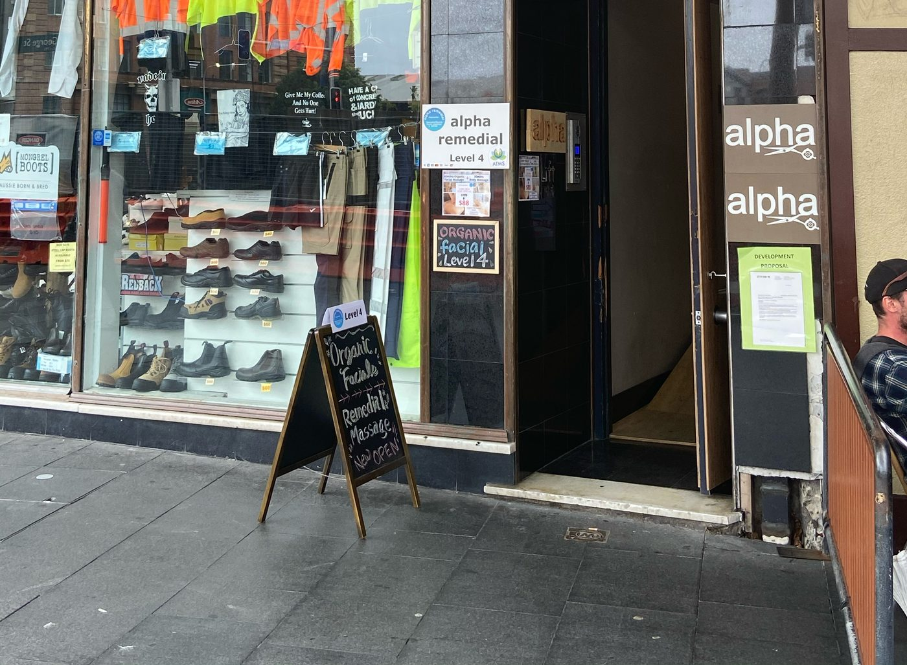
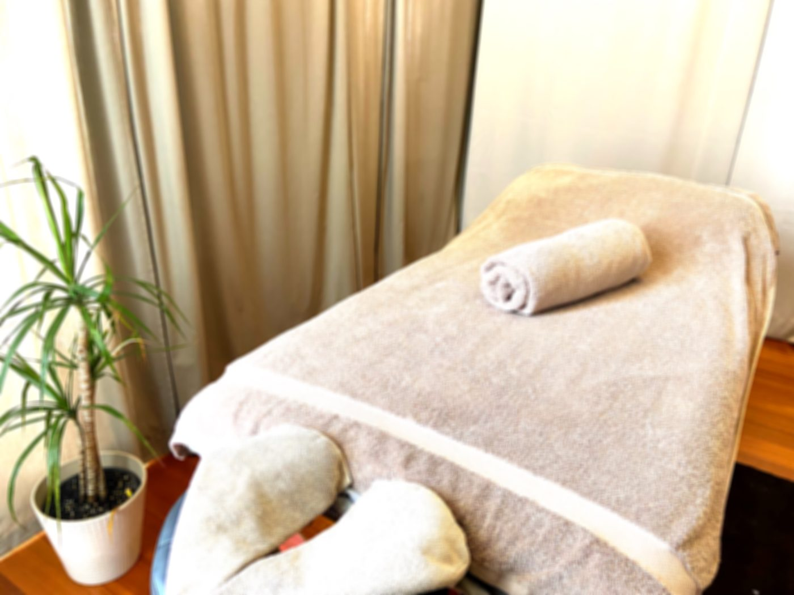

アクセス
George Street 793番地の、4階です。
店は上の階にあるので、入口を通り過ぎてしまう方がいます。目印を写真でご案内します。
-

Railway Square の、れんがの建物
セントラル駅から George Street をシティ方向へ。歩いて5分ほどです。
-

店舗の横にある入口
入口横の「alpha」の看板と、歩道の黒板が目印です。頭上には「alpha Japanese Salon」の吊り看板があります。
-

4階へ
初回は問診票の記入があるので、5分前にお越しください。
- 住所
- Level 4, 793 George Street
Haymarket NSW 2000
Googleマップで開く - 営業時間
- 火〜土10:00–20:00 （最終受付 18:30）日10:00–18:00 （最終受付 16:30）月定休
- 予約
- Freshaでオンライン予約
24時間受付、その場で確定 - 電話・SMS
- 0466 866 280
施術中は出られないことがあります。SMS がいちばん早くお返事できます。 - メール
- alpharemedial793@gmail.com
- お支払い
- 現金、クレジット／デビットカード、Apple Pay、Google Pay。保険請求は HICAPS。
お問い合わせ
予約の前に、聞きたいことがあれば。
どの施術が合うか分からない、この症状は診てもらえるのか。そんなときはお気軽にどうぞ。
フォームへのお返事には少し時間をいただきます。お急ぎの方は 0466 866 280 へ SMS をお送りください。
空いている時間から、選べます。
オンライン予約は24時間受付、その場で確定します。お急ぎのときは SMS かお電話でどうぞ。